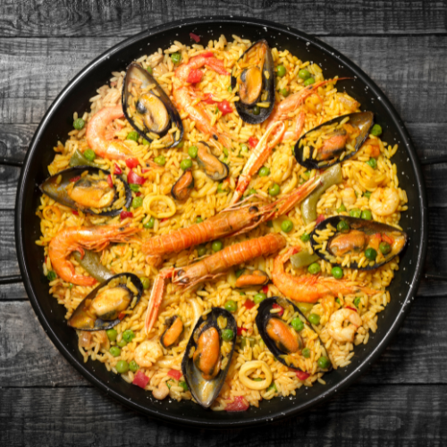

Digital Nomads Malaga

Museums
Malaga is a historic city with a vibrant culture, and there are numerous museums there that we can explore. 15 of these museums are located in the city's historic district and are highly recommended. Some museums contain Phoenician artefacts and archaeological artefacts, while others focus on Malaga's religious culture since its conquest, while still others depict the daily life of Malaga residents from the Middle Ages to the Present. Please visit one of the numerous museums in our province to learn more about it


Historical Places

Roman Theatre
Paella is thought to have been created by the perfect fusion of two Spanish civilizations—the Romans, who brought the pan, and the Arabs, who brought the rice. The dish is typically spiced with saffron but may also contain other herbs and spices depending on the recipe and region of Spain from which it is made. In Malaga, it is nearly always exceptional due to the freshness of seafood, especially the enormous prawns and juicy muscles that make up its main ingredient. Enjoy this excellent huge dish with friends and family.
La Manquita Cathedral
Paella is thought to have been created by the perfect fusion of two Spanish civilizations—the Romans, who brought the pan, and the Arabs, who brought the rice. The dish is typically spiced with saffron but may also contain other herbs and spices depending on the recipe and region of Spain from which it is made. In Malaga, it is nearly always exceptional due to the freshness of seafood, especially the enormous prawns and juicy muscles that make up its main ingredient. Enjoy this excellent huge dish with friends and family.
Botanic Garden
Paella is thought to have been created by the perfect fusion of two Spanish civilizations—the Romans, who brought the pan, and the Arabs, who brought the rice. The dish is typically spiced with saffron but may also contain other herbs and spices depending on the recipe and region of Spain from which it is made. In Malaga, it is nearly always exceptional due to the freshness of seafood, especially the enormous prawns and juicy muscles that make up its main ingredient. Enjoy this excellent huge dish with friends and family.
Alcazaba
Paella is thought to have been created by the perfect fusion of two Spanish civilizations—the Romans, who brought the pan, and the Arabs, who brought the rice. The dish is typically spiced with saffron but may also contain other herbs and spices depending on the recipe and region of Spain from which it is made. In Malaga, it is nearly always exceptional due to the freshness of seafood, especially the enormous prawns and juicy muscles that make up its main ingredient. Enjoy this excellent huge dish with friends and family.
Gibralfaro Castle
Paella is thought to have been created by the perfect fusion of two Spanish civilizations—the Romans, who brought the pan, and the Arabs, who brought the rice. The dish is typically spiced with saffron but may also contain other herbs and spices depending on the recipe and region of Spain from which it is made. In Malaga, it is nearly always exceptional due to the freshness of seafood, especially the enormous prawns and juicy muscles that make up its main ingredient. Enjoy this excellent huge dish with friends and family.